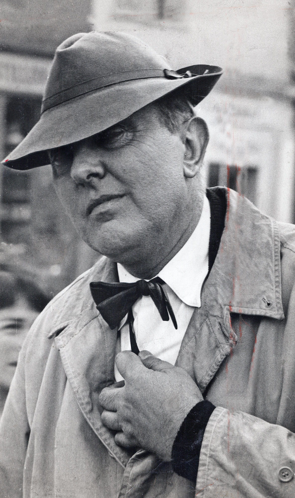

出生
出生於法國勒佩克，原名 Jacques Tatischeff。
法國導演、演員與喜劇創作者，以于洛先生及對現代生活的細密觀察聞名。

賈克・大地本名 Jacques Tatischeff，1907 年出生於法國。早年從事體育活動並發展以運動模仿為核心的默劇表演，之後進入短片與長片創作。
1949 年的《節日》建立了他以動作、聲音與群體空間製造喜劇的方式。1953 年起，于洛先生成為其代表角色；1958 年《我的舅舅》獲奧斯卡最佳外語片。1967 年《遊戲時間》以大型都市布景「Tativille」把現代建築與消費秩序推向極致。
出生於法國勒佩克，原名 Jacques Tatischeff。
以運動員動作模仿與肢體表演受到注意。
《節日》把鄉村日常、機械效率與身體失衡結合。
由海濱假期、現代住宅一路拍到國際都市、汽車文明與馬戲現場。
留下影響深遠的聲音設計、空間喜劇與群體調度方法。